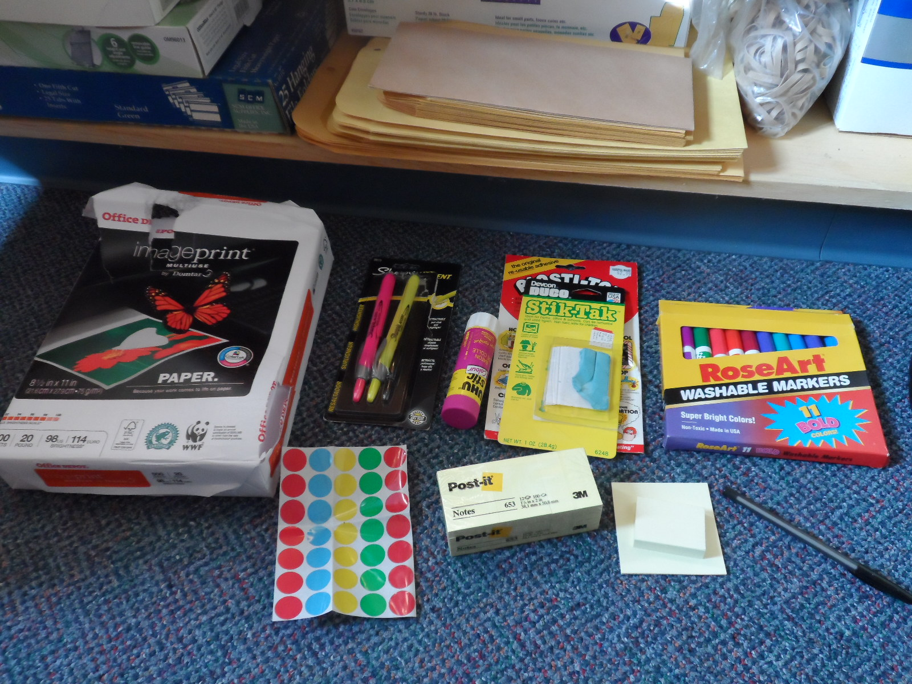
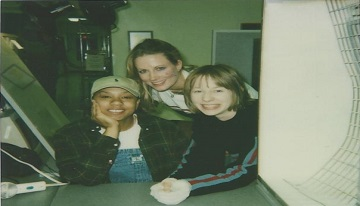

Katherine Michel Research and Design Sprints

Research and Design Sprints
Research, Facilitation, Prototyping, and User Testing (Inspired by Google Ventures Research Sprint and Design Sprint Models)
Research and Design Sprint Projects


IT Project Management
Using the Latest P.M. Tools and Techniques to Deliver to Time, Cost, and Quality

Academic
M.Sc. in Project Management from Top School, Bachelor's Degree in Communication, and Honors

Traditional Artwork
Miller's Professional Imaging, May 12, 1999: Me on the Right Wearing Artist Gloves